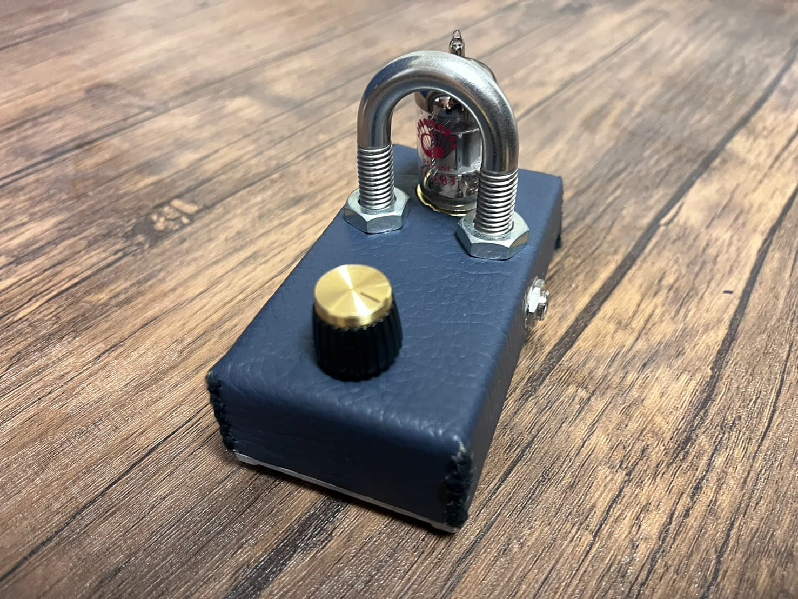
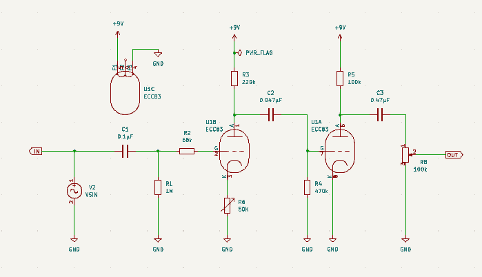
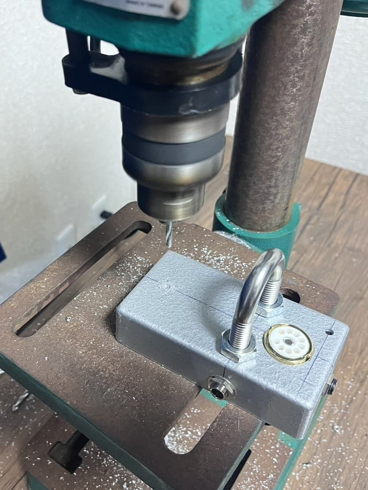
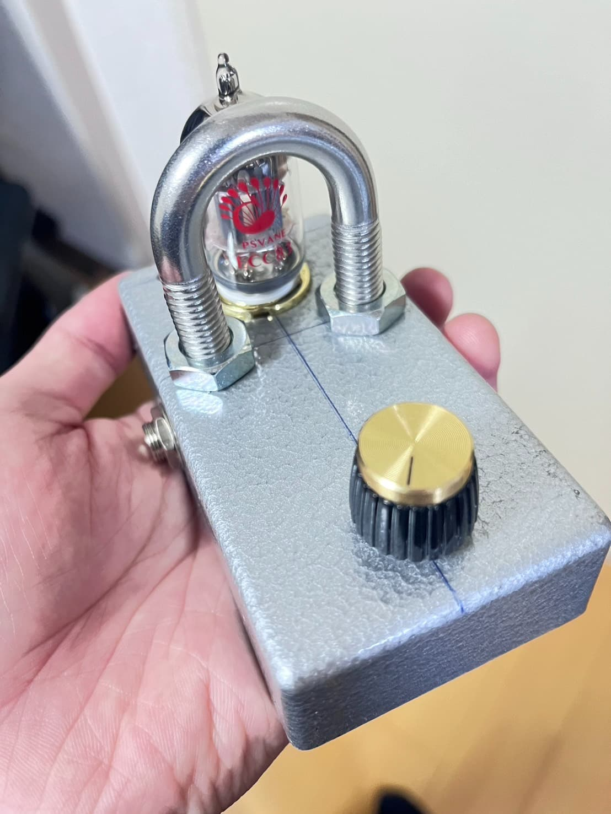
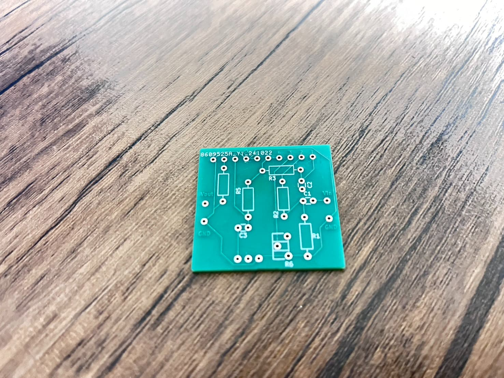
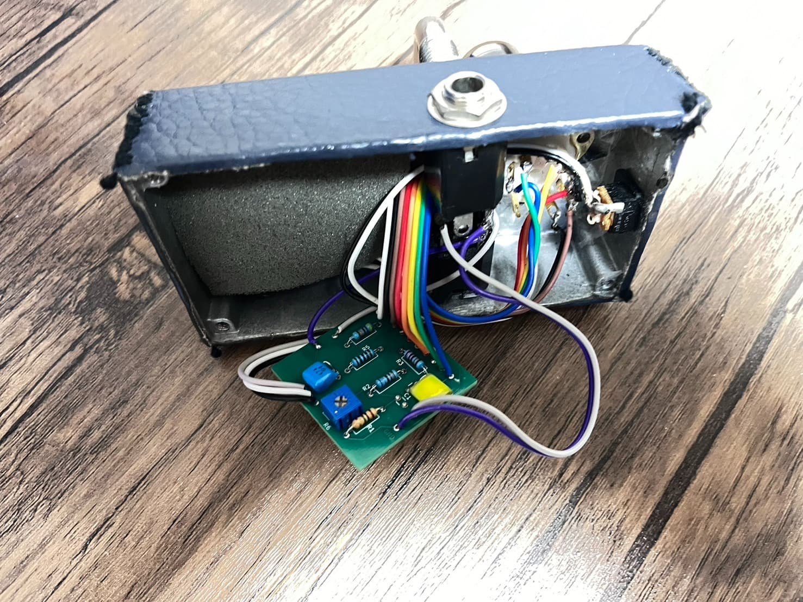
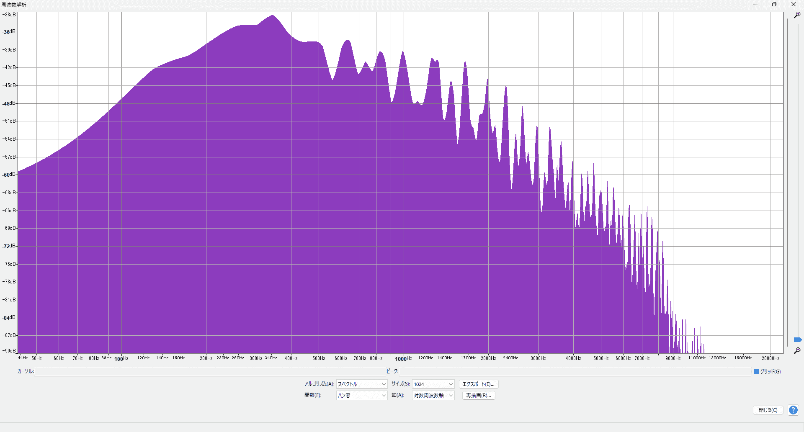
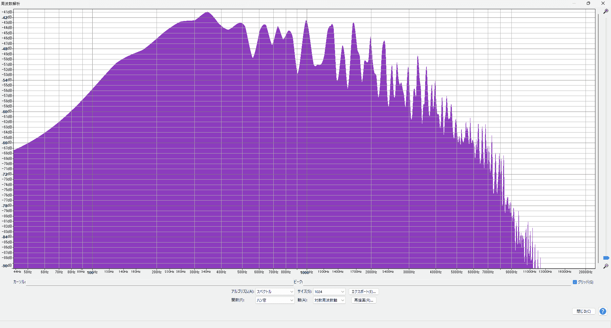

真空管クリーンブースター

真空管を用いたクリーンブースターを制作しました。
このエフェクターの特徴は9Vで動作する点です。従来の真空管エフェクターは100V程度の
高電圧で動作しますが、このエフェクターは低電圧で動作するため、ボードに組み込みやすくなっています。
回路設計

KiCADを用いて回路図を作製しました。
真空管に関する知見は全くありませんでしたが、
インターネット上の様々な情報を組み合わせて、設計を行いました。
ケース製作


一般的なアルミケースにボール盤で穴あけ加工を行って製作しました。
その上から紺色のフェイクレザーを貼って高級感を演出しています。
配線


製作した回路図からプリント基板を発注し、配線を行いました。
試奏動画
スペクトル解析


ギターから直接アンプに接続したときの音をスペクトル解析したもので、
右側が今回製作した真空管エフェクターに接続したときの音を解析したものです。
中音域がより持ち上がっているのがお分かりいただけると思います。